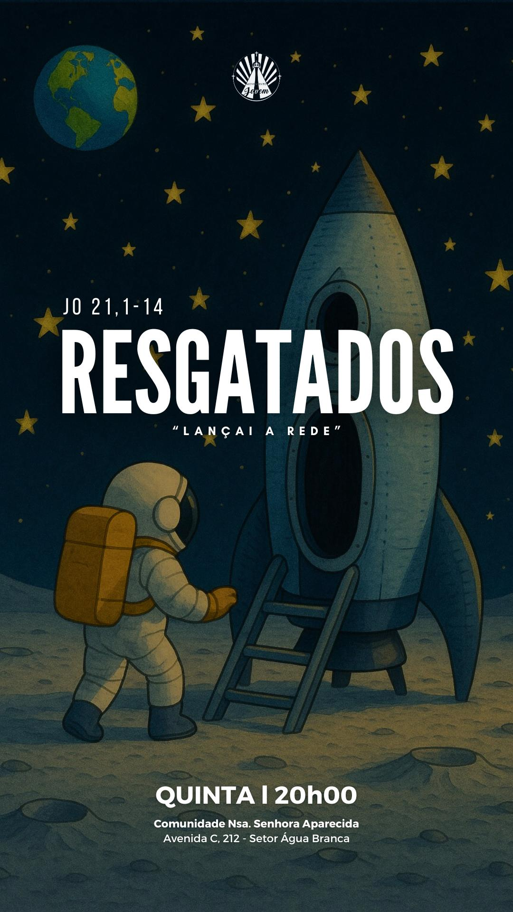

Ao saltarem em terra, viram umas brasas preparadas e um peixe em cima delas,
e pão. Disse-lhes Jesus: Trazei aqui alguns dos peixes que agora apanhastes
Venha viver uma noite inesquecível com Deus e outros jovens como você!
📅 Quinta-feira às 20h00
📍 Comunidade Nossa Senhora Aparecida
Avenida C, 212 - Setor Água Branca
🎤 Uma pregadora abençoada estará conosco compartilhando a Palavra!
